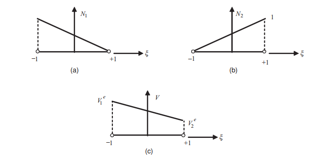

笔记中涉及公式推导的部分并不严谨，仅为了便于理解而记录。如果需要严谨的推导过程，则需要参考专业书籍。笔记中的例子取自《INTRODUCTION TO THE FINITE ELEMENT METHOD IN ELECTROMAGNETICS》
关于梯度、散度和旋度的问题，可以参考这篇笔记
从能量的角度考虑，电势ϕ ( x , y , z ) ⋅ q = W ( x , y , z ) \phi(x,y,z) \cdot q = W(x,y,z) ϕ ( x , y , z ) ⋅ q = W ( x , y , z ) E ⃗ ( x , y , z ) ⋅ d ⃗ ⋅ q = W ( x , y , z ) \vec{E}(x,y,z) \cdot \vec{d} \cdot q = W(x,y,z) E ( x , y , z ) ⋅ d ⋅ q = W ( x , y , z ) E ⃗ ( x , y , z ) = − lim d ⃗ → 0 ⃗ ( ∂ ϕ ( x , y , z ) ∂ d ⃗ ) \vec{E}(x,y,z) = -\lim\limits_{\vec{d} \rarr \vec{0}}( \frac{\partial \phi(x,y,z)}{\partial \vec{d}}) E ( x , y , z ) = − d → 0 lim ( ∂ d ∂ ϕ ( x , y , z ) ) 电场强度是电势梯度的负值 。
E ⃗ ( x , y , z ) = − ∇ ⋅ ϕ ( x , y , z ) (1.1.1) \vec{E}(x,y,z) = -\nabla\cdot\phi(x,y,z) \tag{1.1.1}
E ( x , y , z ) = − ∇ ⋅ ϕ ( x , y , z ) ( 1 . 1 . 1 )
而对于空间上的某一点来说，其电场强度的散度等于这一点的电荷密度比上这一点的介电常数ϵ = ϵ r ( x , y , z ) ⋅ ϵ 0 \epsilon = \epsilon_r(x,y,z)\cdot\epsilon_0 ϵ = ϵ r ( x , y , z ) ⋅ ϵ 0 ϵ r \epsilon_r ϵ r
∇ ⋅ E ⃗ ( x , y , z ) = ρ ( x , y , z ) ϵ r ( x , y , z ) ⋅ ϵ 0 (1.1.2) \nabla\cdot\vec{E}(x,y,z) = \frac{\rho(x,y,z)}{\epsilon_r(x,y,z)\cdot\epsilon_0} \tag{1.1.2}
∇ ⋅ E ( x , y , z ) = ϵ r ( x , y , z ) ⋅ ϵ 0 ρ ( x , y , z ) ( 1 . 1 . 2 )
那么联立( 1.1.1 ) , ( 1.1.2 ) (1.1.1),(1.1.2) ( 1 . 1 . 1 ) , ( 1 . 1 . 2 )
∇ 2 ⋅ ϕ ( x , y , z ) = − ρ ( x , y , z ) ϵ r ( x , y , z ) ⋅ ϵ 0 (1.1.3) \nabla^2\cdot\phi(x,y,z) = -\frac{\rho(x,y,z)}{\epsilon_r(x,y,z)\cdot\epsilon_0} \tag{1.1.3}
∇ 2 ⋅ ϕ ( x , y , z ) = − ϵ r ( x , y , z ) ⋅ ϵ 0 ρ ( x , y , z ) ( 1 . 1 . 3 )
其中，ϕ ( x , y , z ) \phi(x,y,z) ϕ ( x , y , z ) ρ ( x , y , z ) , ϵ r ( x , y , z ) \rho(x,y,z),\epsilon_r(x,y,z) ρ ( x , y , z ) , ϵ r ( x , y , z )
以( 1.1.3 ) (1.1.3) ( 1 . 1 . 3 ) ϕ ( x = 0 ) = V 0 , ϕ ( x = d ) = 0 , ρ = ρ 0 , ϵ r \phi(x=0) = V_0, \phi(x=d)=0,\rho=\rho_0,\epsilon_r ϕ ( x = 0 ) = V 0 , ϕ ( x = d ) = 0 , ρ = ρ 0 , ϵ r
∇ 2 ⋅ ϕ ( x ) = d 2 ϕ ( x ) d x 2 = − ρ 0 ϵ r ⋅ ϵ 0 (1.2.1) \nabla^2\cdot\phi(x) =\frac{d^2\phi(x)}{dx^2} = -\frac{\rho_0}{\epsilon_r\cdot\epsilon_0} \tag{1.2.1}
∇ 2 ⋅ ϕ ( x ) = d x 2 d 2 ϕ ( x ) = − ϵ r ⋅ ϵ 0 ρ 0 ( 1 . 2 . 1 )
两边同时积分两次得：
ϕ ( x ) = ρ 0 2 ϵ r ϵ 0 x 2 + c 1 x + c 0 (1.2.2) \phi(x) = \frac{\rho_0}{2\epsilon_r\epsilon_0}x^2+c_1x+c_0 \tag{1.2.2}
ϕ ( x ) = 2 ϵ r ϵ 0 ρ 0 x 2 + c 1 x + c 0 ( 1 . 2 . 2 )
代入边界条件，可得：
ϕ ( x ) = ρ 0 2 ϵ r ϵ 0 x 2 − ( ρ 0 d 2 ϵ r ϵ 0 + ϕ 0 d ) x + ϕ 0 (1.2.3) \phi(x) = \frac{\rho_0}{2\epsilon_r\epsilon_0}x^2 - (\frac{\rho_0d}{2\epsilon_r\epsilon_0}+\frac{\phi_0}{d})x+\phi_0 \tag{1.2.3}
ϕ ( x ) = 2 ϵ r ϵ 0 ρ 0 x 2 − ( 2 ϵ r ϵ 0 ρ 0 d + d ϕ 0 ) x + ϕ 0 ( 1 . 2 . 3 )
当空间上没有电荷分布，即ρ = 0 \rho=0 ρ = 0 ( 1.2.3 ) (1.2.3) ( 1 . 2 . 3 )
ϕ ( x ) = ϕ 0 ⋅ ( 1 − x d ) (1.2.4) \phi(x) = \phi_0 \cdot (1-\frac{x}{d}) \tag{1.2.4}
ϕ ( x ) = ϕ 0 ⋅ ( 1 − d x ) ( 1 . 2 . 4 )
表示在0 < x < d 0<x<d 0 < x < d
在数值分析或仿真计算中，求解如( 3 ) (3) ( 3 ) ϕ i \phi_i ϕ i ϕ \phi ϕ
在这篇笔记中，重点只关注偏微分方程的求解与结果的插值，至于网格划分，一般可以通过现成的工具完成。
有限元之加权残值法初探 这是一个求解二阶边值问题的十分清晰的例子。这里只记录简单的过程。
假设有二阶微分方程：
w ′ ′ + 1 = 0 (1.3.1) w'' + 1 = 0 \tag{1.3.1}
w ′ ′ + 1 = 0 ( 1 . 3 . 1 )
并且给定边界条件：
w ( 0 ) = 0 , w ′ ( 1 ) = 0 (1.3.2) w(0)=0, w'(1)=0 \tag{1.3.2}
w ( 0 ) = 0 , w ′ ( 1 ) = 0 ( 1 . 3 . 2 )
可以先任意猜一个函数作为方程( 1.3.1 ) (1.3.1) ( 1 . 3 . 1 ) 实验函数(trial func) 。假设为：
w h = s i n ( π 2 x ) (1.3.3) w_h = sin(\frac{\pi}{2}x) \tag{1.3.3}
w h = s i n ( 2 π x ) ( 1 . 3 . 3 )
代入方程( 1.3.1 ) (1.3.1) ( 1 . 3 . 1 ) 残差(residual) ：
r ( x ) = w n ′ ′ + 1 = − ( π 2 ) 2 s i n ( π 2 x ) + 1 (1.3.4) r(x) = w_n'' + 1 = -(\frac{\pi}{2})^2sin(\frac{\pi}{2}x)+1 \tag{1.3.4}
r ( x ) = w n ′ ′ + 1 = − ( 2 π ) 2 s i n ( 2 π x ) + 1 ( 1 . 3 . 4 )
如果残差处处为0，那么w h ( x ) w_h(x) w h ( x ) 加权残值测试 ：r ( x ) r(x) r ( x ) 测试函数(test func) ，v ( x ) v(x) v ( x )
∫ 0 1 v ( x ) r ( x ) d x = 0 ? (1.3.5) \int_0^1v(x)r(x)dx = 0? \tag{1.3.5}
∫ 0 1 v ( x ) r ( x ) d x = 0 ? ( 1 . 3 . 5 )
将式( 1.3.5 ) (1.3.5) ( 1 . 3 . 5 )
∫ 0 1 v ( x ) r ( x ) d x = ∫ 0 1 v ( x ) [ w h ( x ) ′ ′ + 1 ] d x = ∫ 0 1 v ( x ) w h ′ ′ ( x ) d x ⏟ p a r t 1 + ∫ 0 1 v ( x ) d x ⏟ p a r t 2 (1.3.6) \int_0^1v(x)r(x)dx = \int_0^1v(x)[w_h(x)''+1]dx = \underbrace{\int_0^1v(x)w_h''(x)dx }_{part 1}+ \underbrace{\int_0^1v(x)dx}_{part 2} \tag{1.3.6}
∫ 0 1 v ( x ) r ( x ) d x = ∫ 0 1 v ( x ) [ w h ( x ) ′ ′ + 1 ] d x = p a r t 1 ∫ 0 1 v ( x ) w h ′ ′ ( x ) d x + p a r t 2 ∫ 0 1 v ( x ) d x ( 1 . 3 . 6 )
将p a r t 1 part 1 p a r t 1
∫ 0 1 v ( x ) w h ′ ′ ( x ) d x = [ v ( x ) w h ′ ( x ) ] ∣ 0 1 − ∫ 0 1 v ′ ( x ) w h ′ ( x ) d x (1.3.7) \int_0^1v(x)w_h''(x)dx = [v(x)w_h'(x)]|^1_0 - \int_0^1v'(x)w_h'(x)dx \tag{1.3.7}
∫ 0 1 v ( x ) w h ′ ′ ( x ) d x = [ v ( x ) w h ′ ( x ) ] ∣ 0 1 − ∫ 0 1 v ′ ( x ) w h ′ ( x ) d x ( 1 . 3 . 7 )
所以式( 1.3.5 ) (1.3.5) ( 1 . 3 . 5 )
∫ 0 1 v ( x ) r ( x ) d x = [ v ( x ) w h ′ ( x ) ] ∣ 0 1 − ∫ 0 1 v ′ ( x ) w h ′ ( x ) d x + ∫ 0 1 v ( x ) d x (1.3.8) \int_0^1v(x)r(x)dx = [v(x)w_h'(x)]|^1_0 - \int_0^1v'(x)w_h'(x)dx + \int_0^1v(x)dx \tag{1.3.8}
∫ 0 1 v ( x ) r ( x ) d x = [ v ( x ) w h ′ ( x ) ] ∣ 0 1 − ∫ 0 1 v ′ ( x ) w h ′ ( x ) d x + ∫ 0 1 v ( x ) d x ( 1 . 3 . 8 )
这么做的目的是为了简化我们寻找测试函数v ( x ) v(x) v ( x ) v ( x ) v(x) v ( x ) v ( x ) v(x) v ( x ) w h ( x ) w_h(x) w h ( x ) 伽辽金法(Galerkin method) 。
现取v ( x ) = w h = s i n ( π 2 x ) v(x)=w_h = sin(\frac{\pi}{2}x) v ( x ) = w h = s i n ( 2 π x ) ( 1.3.5 ) (1.3.5) ( 1 . 3 . 5 )
为实验函数添加系数，也被称作自由度(DOF) ，而原先的s i n ( π 2 x ) sin(\frac{\pi}{2}x) s i n ( 2 π x ) 基函数(basis func) ；
为实验函数添加高次项，类似于级数的思想，只要高次项足够多，总能拟合出优秀的曲线
首先应用第一种策略，令w h ( x ) = α s i n ( π 2 x ) w_h(x) = \alpha sin(\frac{\pi}{2}x) w h ( x ) = α s i n ( 2 π x ) ( 1.3.5 ) (1.3.5) ( 1 . 3 . 5 ) v ( x ) v(x) v ( x ) α = 16 π 2 \alpha=\frac{16}{\pi^2} α = π 2 1 6
继续应用第二种策略，为实验函数添加一组高阶的基函数和自由度：
w h ( x ) = α 1 s i n ( π 2 x ) + α 2 s i n ( 3 π 2 x ) (1.3.9) w_h(x) = \alpha_1sin(\frac{\pi}{2}x) + \alpha_2sin(\frac{3\pi}{2}x) \tag{1.3.9}
w h ( x ) = α 1 s i n ( 2 π x ) + α 2 s i n ( 2 3 π x ) ( 1 . 3 . 9 )
因为有了两个自由度，所以在验证加权残差时需要两个试函数：
{ v 1 ( x ) = s i n ( π 2 x ) v 2 ( x ) = s i n ( 3 π 2 x ) (1.3.10) \begin{cases}
v_1(x) = sin(\frac{\pi}{2}x) \\
v_2(x) = sin(\frac{3\pi}{2}x)
\end{cases} \tag{1.3.10} { v 1 ( x ) = s i n ( 2 π x ) v 2 ( x ) = s i n ( 2 3 π x ) ( 1 . 3 . 1 0 )
联立式( 1.3.5 ) , ( 1.3.9 ) , ( 1.3.10 ) (1.3.5),(1.3.9),(1.3.10) ( 1 . 3 . 5 ) , ( 1 . 3 . 9 ) , ( 1 . 3 . 1 0 )
原笔记上没有，这里我也没算
抱着试试看的态度，自己选择了一个多项式的基底，满足边界条件和二阶微分方程，则基底可以选择如下形式：
w h ( x ) = ( x 2 − 2 x ) (1.3.11) w_h(x) = (x^2-2x) \tag{1.3.11}
w h ( x ) = ( x 2 − 2 x ) ( 1 . 3 . 1 1 )
同样试函数v ( x ) = w h ( x ) = x 2 − 2 x v(x)=w_h(x)=x^2-2x v ( x ) = w h ( x ) = x 2 − 2 x ( 1.3.5 ) (1.3.5) ( 1 . 3 . 5 ) α = − 0.5 \alpha=-0.5 α = − 0 . 5
假如实验函数w h ( x ) = α 1 x 2 + α 2 x w_h(x)=\alpha_1x^2+\alpha_2x w h ( x ) = α 1 x 2 + α 2 x α 1 = − 0.5 \alpha_1 = -0.5 α 1 = − 0 . 5 w h ′ ( 1 ) = 0 w_h'(1)=0 w h ′ ( 1 ) = 0 α 2 = − 2 α 1 \alpha_2=-2\alpha_1 α 2 = − 2 α 1
同样取( 1.2.1 ) (1.2.1) ( 1 . 2 . 1 ) V ( x = 0 ) = V 0 , V ( x = d ) = 0 , ρ = ρ 0 , ϵ r V(x=0) = V_0, V(x=d)=0,\rho=\rho_0,\epsilon_r V ( x = 0 ) = V 0 , V ( x = d ) = 0 , ρ = ρ 0 , ϵ r
∇ 2 ⋅ V ( x ) = d 2 V ( x ) d x 2 = − ρ 0 ϵ r ⋅ ϵ 0 (2.1.1) \nabla^2\cdot V(x) =\frac{d^2V(x)}{dx^2} = -\frac{\rho_0}{\epsilon_r\cdot\epsilon_0} \tag{2.1.1}
∇ 2 ⋅ V ( x ) = d x 2 d 2 V ( x ) = − ϵ r ⋅ ϵ 0 ρ 0 ( 2 . 1 . 1 )
划分网格在一维条件下就表现为划分线段。假设在x ∈ [ 0 , d ] x \in [0,d] x ∈ [ 0 , d ] N e N_e N e
插值函数，也称作形函数，也是上文中的实验函数 。对于插值函数得选择，我们往往会做一些优化：
上图( a ) (a) ( a ) e e e x 1 e , x 2 e x^e_1,x^e_2 x 1 e , x 2 e 但是由于根据起止点求积分不太方便，这里我们考虑将其转化到新的ξ \xi ξ 。令：
ξ = 2 ( x − x 1 e ) x 2 e − x 1 e − 1 (2.2.1) \xi = \frac{2(x-x^e_1)}{x^e_2 - x^e_1}-1 \tag{2.2.1}
ξ = x 2 e − x 1 e 2 ( x − x 1 e ) − 1 ( 2 . 2 . 1 )
可以得到ξ ∈ [ − 1 , 1 ] \xi\in [-1,1] ξ ∈ [ − 1 , 1 ]
同样为了简化计算，我们取形函数为一次线性函数，并且只与起止点有关：
V ( ξ ) = V 1 e N 1 ( ξ ) + V 2 e N 2 ( ξ ) (2.2.2) V(\xi) = V^e_1N_1(\xi) + V^e_2N_2(\xi) \tag{2.2.2}
V ( ξ ) = V 1 e N 1 ( ξ ) + V 2 e N 2 ( ξ ) ( 2 . 2 . 2 )
这里V 1 e , V 2 e V^e_1,V^e_2 V 1 e , V 2 e 形函数 ：
{ N 1 ( ξ ) = 1 − ξ 2 N 2 ( ξ ) = 1 + ξ 2 (2.2.3) \begin{cases}
N_1(\xi) = \frac{1-\xi}{2} \\
N_2(\xi) = \frac{1+\xi}{2}
\end{cases} \tag{2.2.3} { N 1 ( ξ ) = 2 1 − ξ N 2 ( ξ ) = 2 1 + ξ ( 2 . 2 . 3 )

提一嘴，形函数的数量表示自由度，一般来说自由度越多，最后的解也就越精确。
在加权余量法 中，我们提到了伽辽金法是一种特殊的加权余量法，其权重函数等于形函数。对于一维静电场的问题，我们的形函数只有两个自由度，在任意一条线段上，其电压的函数应如下式：
V ( x ) = ∑ j = 1 n v j e N j ( x ) (2.3.1) V(x) = \sum\limits^n_{j=1}v^e_jN_j(x) \tag{2.3.1}
V ( x ) = j = 1 ∑ n v j e N j ( x ) ( 2 . 3 . 1 )
其中j j j ( 2.1.1 ) (2.1.1) ( 2 . 1 . 1 )
r e = ∫ x 1 e x 2 e w [ d d x ( ϵ e d V d x ) + ρ v e ] d x (2.3.2) r^e = \int^{x^e_2}_{x^e_1}w [\frac{d}{dx}(\epsilon^e\frac{dV}{dx})+\rho^e_v]dx \tag{2.3.2}
r e = ∫ x 1 e x 2 e w [ d x d ( ϵ e d x d V ) + ρ v e ] d x ( 2 . 3 . 2 )
其中ϵ e = ϵ r e ϵ 0 \epsilon^e = \epsilon^e_r\epsilon_0 ϵ e = ϵ r e ϵ 0 ρ v e \rho^e_v ρ v e 0 0 0 V ( x ) V(x) V ( x ) V ( x ) V(x) V ( x ) ( 2.3.2 ) (2.3.2) ( 2 . 3 . 2 )
∫ x 1 e x 2 e ( d w d x ) ϵ e ( d V d x ) d x − ∫ x 1 e x 2 e w ρ v e d x − w ϵ e d V d x ∣ x 1 e x 2 e = 0 (2.3.3) \int^{x^e_2}_{x^e_1} (\frac{dw}{dx})\epsilon^e(\frac{dV}{dx})dx - \int^{x^e_2}_{x^e_1} w\rho^e_v dx - w\epsilon^e\frac{dV}{dx}|^{x^e_2}_{x^e_1} = 0 \tag{2.3.3}
∫ x 1 e x 2 e ( d x d w ) ϵ e ( d x d V ) d x − ∫ x 1 e x 2 e w ρ v e d x − w ϵ e d x d V ∣ x 1 e x 2 e = 0 ( 2 . 3 . 3 )
令D x e ( x ) = − ϵ e d V ( x ) d x D^e_x(x) = -\epsilon^e\frac{dV(x)}{dx} D x e ( x ) = − ϵ e d x d V ( x ) ( 2.3.3 ) (2.3.3) ( 2 . 3 . 3 )
∫ x 1 e x 2 e ( d w d x ) ϵ e ( d V d x ) d x − ∫ x 1 e x 2 e w ρ v e d x + w ( x 2 e ) D x e ( x 2 e ) − w ( x 1 e ) D x e ( x 1 e ) = 0 (2.3.4) \int^{x^e_2}_{x^e_1} (\frac{dw}{dx})\epsilon^e(\frac{dV}{dx})dx - \int^{x^e_2}_{x^e_1} w\rho^e_v dx + w(x^e_2)D^e_x(x^e_2) - w(x^e_1)D^e_x(x^e_1) = 0 \tag{2.3.4}
∫ x 1 e x 2 e ( d x d w ) ϵ e ( d x d V ) d x − ∫ x 1 e x 2 e w ρ v e d x + w ( x 2 e ) D x e ( x 2 e ) − w ( x 1 e ) D x e ( x 1 e ) = 0 ( 2 . 3 . 4 )
因为我们选取的自由度等于2 2 2 ( 2.3.1 ) (2.3.1) ( 2 . 3 . 1 )
{ ∫ x 1 e x 2 e ( d N 1 d x ) ϵ e ( ∑ j = 1 n v j e d N j d x ) d x = ∫ x 1 e x 2 e N 1 ρ v e d x − N 1 ( x 2 e ) D x e ( x 2 e ) + N 1 ( x 1 e ) D x e ( x 1 e ) ∫ x 1 e x 2 e ( d N 2 d x ) ϵ e ( ∑ j = 1 n v j e d N j d x ) d x = ∫ x 1 e x 2 e N 2 ρ v e d x − N 2 ( x 2 e ) D x e ( x 2 e ) + N 2 ( x 1 e ) D x e ( x 1 e ) (2.3.5) \begin{cases}
\int^{x^e_2}_{x^e_1} (\frac{dN_1}{dx})\epsilon^e(\sum\limits^n_{j=1}v^e_j\frac{dN_j}{dx})dx = \int^{x^e_2}_{x^e_1} N_1\rho^e_v dx - N_1(x^e_2)D^e_x(x^e_2) + N_1(x^e_1)D^e_x(x^e_1) \\
\int^{x^e_2}_{x^e_1} (\frac{dN_2}{dx})\epsilon^e(\sum\limits^n_{j=1}v^e_j\frac{dN_j}{dx})dx = \int^{x^e_2}_{x^e_1} N_2\rho^e_v dx - N_2(x^e_2)D^e_x(x^e_2) + N_2(x^e_1)D^e_x(x^e_1)
\end{cases} \tag{2.3.5} ⎩ ⎪ ⎪ ⎪ ⎨ ⎪ ⎪ ⎪ ⎧ ∫ x 1 e x 2 e ( d x d N 1 ) ϵ e ( j = 1 ∑ n v j e d x d N j ) d x = ∫ x 1 e x 2 e N 1 ρ v e d x − N 1 ( x 2 e ) D x e ( x 2 e ) + N 1 ( x 1 e ) D x e ( x 1 e ) ∫ x 1 e x 2 e ( d x d N 2 ) ϵ e ( j = 1 ∑ n v j e d x d N j ) d x = ∫ x 1 e x 2 e N 2 ρ v e d x − N 2 ( x 2 e ) D x e ( x 2 e ) + N 2 ( x 1 e ) D x e ( x 1 e ) ( 2 . 3 . 5 )
又因为：
{ N 1 ( x 1 e ) = 1 N 2 ( x 1 e ) = 0 N 1 ( x 1 e ) = 0 N 2 ( x 1 e ) = 1 \begin{cases}
N_1(x^e_1) = 1 \\
N_2(x^e_1) = 0 \\
N_1(x^e_1) = 0 \\
N_2(x^e_1) = 1
\end{cases} ⎩ ⎪ ⎪ ⎪ ⎪ ⎨ ⎪ ⎪ ⎪ ⎪ ⎧ N 1 ( x 1 e ) = 1 N 2 ( x 1 e ) = 0 N 1 ( x 1 e ) = 0 N 2 ( x 1 e ) = 1
所以可以得到如下形式：
{ ∫ x 1 e x 2 e ( d N 1 d x ) ϵ e d N 1 d x d x ⋅ v 1 e + ∫ x 1 e x 2 e ( d N 1 d x ) ϵ e d N 2 d x d x ⋅ v 2 e = ∫ x 1 e x 2 e N 1 ρ v e d x + D x e ( x 1 e ) ∫ x 1 e x 2 e ( d N 2 d x ) ϵ e d N 1 d x d x ⋅ v 1 e + ∫ x 1 e x 2 e ( d N 2 d x ) ϵ e d N 2 d x d x ⋅ v 2 e = ∫ x 1 e x 2 e N 2 ρ v e d x − D x e ( x 2 e ) (2.3.6) \begin{cases}
\int^{x^e_2}_{x^e_1} (\frac{dN_1}{dx})\epsilon^e\frac{dN_1}{dx}dx \cdot v^e_1 + \int^{x^e_2}_{x^e_1} (\frac{dN_1}{dx})\epsilon^e\frac{dN_2}{dx}dx \cdot v^e_2 = \int^{x^e_2}_{x^e_1} N_1\rho^e_v dx + D^e_x(x^e_1) \\
\int^{x^e_2}_{x^e_1} (\frac{dN_2}{dx})\epsilon^e\frac{dN_1}{dx}dx \cdot v^e_1 + \int^{x^e_2}_{x^e_1} (\frac{dN_2}{dx})\epsilon^e\frac{dN_2}{dx}dx \cdot v^e_2 = \int^{x^e_2}_{x^e_1} N_2\rho^e_v dx -D^e_x(x^e_2)
\end{cases} \tag{2.3.6} { ∫ x 1 e x 2 e ( d x d N 1 ) ϵ e d x d N 1 d x ⋅ v 1 e + ∫ x 1 e x 2 e ( d x d N 1 ) ϵ e d x d N 2 d x ⋅ v 2 e = ∫ x 1 e x 2 e N 1 ρ v e d x + D x e ( x 1 e ) ∫ x 1 e x 2 e ( d x d N 2 ) ϵ e d x d N 1 d x ⋅ v 1 e + ∫ x 1 e x 2 e ( d x d N 2 ) ϵ e d x d N 2 d x ⋅ v 2 e = ∫ x 1 e x 2 e N 2 ρ v e d x − D x e ( x 2 e ) ( 2 . 3 . 6 )
令K i j e = ∫ x 1 e x 2 e ( d N i d x ) ϵ e d N j d x d x , f i e = ∫ x 1 e x 2 e N i ρ v e d x , d e = [ D 1 e − D 2 e ] K^e_{ij} = \int^{x^e_2}_{x^e_1} (\frac{dN_i}{dx})\epsilon^e\frac{dN_j}{dx}dx, f^e_i= \int^{x^e_2}_{x^e_1} N_i\rho^e_v dx, \boldsymbol{d^e}=\begin{bmatrix}
D^e_1 \\
-D^e_2
\end{bmatrix} K i j e = ∫ x 1 e x 2 e ( d x d N i ) ϵ e d x d N j d x , f i e = ∫ x 1 e x 2 e N i ρ v e d x , d e = [ D 1 e − D 2 e ] ( 2.3.6 ) (2.3.6) ( 2 . 3 . 6 )
[ K 11 e K 12 e K 21 e K 22 e ] [ v 1 e v 2 e ] = [ f 1 e f 2 e ] + [ D 1 e − D 2 e ] (2.3.7) \begin{bmatrix}
K^e_{11} & K^e_{12} \\
K^e_{21} & K^e_{22}
\end{bmatrix}\begin{bmatrix}
v^e_{1} \\
v^e_{2}
\end{bmatrix} = \begin{bmatrix}
f^e_{1} \\
f^e_{2}
\end{bmatrix} + \begin{bmatrix}
D^e_{1} \\
-D^e_{2}
\end{bmatrix} \tag{2.3.7} [ K 1 1 e K 2 1 e K 1 2 e K 2 2 e ] [ v 1 e v 2 e ] = [ f 1 e f 2 e ] + [ D 1 e − D 2 e ] ( 2 . 3 . 7 )
回忆插值函数 中的坐标系变换部分，我们容易得到：
d ξ = 2 x 2 e − x 1 e d x = 2 l e d x (2.3.8) d\xi = \frac{2}{x^e_2 - x^e_1}dx = \frac{2}{l^e}dx \tag{2.3.8}
d ξ = x 2 e − x 1 e 2 d x = l e 2 d x ( 2 . 3 . 8 )
亦有：
d N i d x = d N i d ξ d ξ d x = 2 l e N i d ξ (2.3.9) \frac{dN_i}{dx} = \frac{dN_i}{d\xi}\frac{d\xi}{dx} = \frac{2}{l^e}\frac{N_i}{d\xi} \tag{2.3.9}
d x d N i = d ξ d N i d x d ξ = l e 2 d ξ N i ( 2 . 3 . 9 )
可以根据式( 2.3.9 ) (2.3.9) ( 2 . 3 . 9 ) K i j e K^e_{ij} K i j e
K i j e = ∫ − 1 + 1 ( 2 l e d N i d ξ ) ϵ e ( 2 l e d N j d ξ ) l e 2 d ξ = 2 ϵ e l e ∫ − 1 + 1 d N i d ξ d N j d ξ d ξ (2.3.10) K^e_{ij} = \int^{+1}_{-1}(\frac{2}{l^e}\frac{dN_i}{d\xi})\epsilon^e(\frac{2}{l^e}\frac{dN_j}{d\xi})\frac{l^e}{2}d\xi = \frac{2\epsilon^e}{l^e}\int^{+1}_{-1}\frac{dN_i}{d\xi}\frac{dN_j}{d\xi}d\xi \tag{2.3.10}
K i j e = ∫ − 1 + 1 ( l e 2 d ξ d N i ) ϵ e ( l e 2 d ξ d N j ) 2 l e d ξ = l e 2 ϵ e ∫ − 1 + 1 d ξ d N i d ξ d N j d ξ ( 2 . 3 . 1 0 )
有根据式( 2.2.3 ) (2.2.3) ( 2 . 2 . 3 )
{ d N 1 d ξ = − 1 2 d N 2 d ξ = 1 2 (2.3.11) \begin{cases}
\frac{dN_1}{d\xi} = -\frac{1}{2} \\
\frac{dN_2}{d\xi} = \frac{1}{2}
\end{cases} \tag{2.3.11} { d ξ d N 1 = − 2 1 d ξ d N 2 = 2 1 ( 2 . 3 . 1 1 )
于是：
K e = ϵ e l e [ + 1 − 1 − 1 + 1 ] (2.3.12) K^e = \frac{\epsilon^e}{l^e}\begin{bmatrix}
+1 & -1 \\
-1 & +1
\end{bmatrix} \tag{2.3.12} K e = l e ϵ e [ + 1 − 1 − 1 + 1 ] ( 2 . 3 . 1 2 )
同理，我们可以求f i e = − l e ρ v e 2 ∫ − 1 + 1 N i ξ d ξ f^e_i=-\frac{l^e\rho^e_v}{2}\int^{+1}_{-1}N_i{\xi}d\xi f i e = − 2 l e ρ v e ∫ − 1 + 1 N i ξ d ξ
f e = − l e ρ 0 2 [ 1 1 ] (2.3.13) f^e = -\frac{l^e\rho_0}{2}\begin{bmatrix}
1 \\
1
\end{bmatrix} \tag{2.3.13} f e = − 2 l e ρ 0 [ 1 1 ] ( 2 . 3 . 1 3 )
这里的ρ \rho ρ ( 2.3.7 ) (2.3.7) ( 2 . 3 . 7 )
ϵ e l e [ + 1 − 1 − 1 + 1 ] [ v 1 e v 2 e ] = − l e ρ 0 2 [ 1 1 ] + [ D 1 e − D 2 e ] (2.3.14) \frac{\epsilon^e}{l^e}\begin{bmatrix}
+1 & -1 \\
-1 & +1
\end{bmatrix} \begin{bmatrix}
v^e_1 \\
v^e_2
\end{bmatrix} = -\frac{l^e\rho_0}{2}\begin{bmatrix}
1 \\
1
\end{bmatrix} + \begin{bmatrix}
D^e_1 \\
-D^e_2
\end{bmatrix} \tag{2.3.14} l e ϵ e [ + 1 − 1 − 1 + 1 ] [ v 1 e v 2 e ] = − 2 l e ρ 0 [ 1 1 ] + [ D 1 e − D 2 e ] ( 2 . 3 . 1 4 )
现在可以看出来为什么切换坐标系可以简化计算了。
我们在划分网格，也就是线段的时候，线段是彼此首尾相连的，也就是说一个线段尾端的各种参数应该是等于下一条线段首端的参数。由式( 2.3.7 ) (2.3.7) ( 2 . 3 . 7 )
{ K 11 ( 1 ) v 1 ( 1 ) + K 12 ( 1 ) v 2 ( 1 ) = f 1 ( 1 ) + D 1 ( 1 ) K 21 ( 1 ) v 1 ( 1 ) + K 22 ( 1 ) v 2 ( 1 ) = f 2 ( 1 ) − D 2 ( 1 ) } l 1 K 11 ( 2 ) v 1 ( 2 ) + K 12 ( 2 ) v 2 ( 2 ) = f 1 ( 2 ) + D 1 ( 2 ) K 21 ( 2 ) v 1 ( 2 ) + K 22 ( 2 ) v 2 ( 2 ) = f 2 ( 2 ) − D 2 ( 2 ) } l 2 ⋮ K 11 ( n ) v 1 ( n ) + K 12 ( n ) v 2 ( n ) = f 1 ( n ) + D 1 ( n ) K 21 ( n ) v 1 ( n ) + K 22 ( n ) v 2 ( n ) = f 2 ( n ) − D 2 ( n ) } l n (2.4.1) \begin{cases}
\begin{rcases}
K^{(1)}_{11}v^{(1)}_{1} + K^{(1)}_{12}v^{(1)}_{2} & = & f^{(1)}_{1} + D^{(1)}_{1} \\
K^{(1)}_{21}v^{(1)}_{1} + K^{(1)}_{22}v^{(1)}_{2} & = & f^{(1)}_{2} - D^{(1)}_{2}
\end{rcases} & l1\\
\begin{rcases}
K^{(2)}_{11}v^{(2)}_{1} + K^{(2)}_{12}v^{(2)}_{2} & = & f^{(2)}_{1} + D^{(2)}_{1} \\
K^{(2)}_{21}v^{(2)}_{1} + K^{(2)}_{22}v^{(2)}_{2} & = & f^{(2)}_{2} - D^{(2)}_{2}
\end{rcases} & l2 \\
\vdots \\
\begin{rcases}
K^{(n)}_{11}v^{(n)}_{1} + K^{(n)}_{12}v^{(n)}_{2} & = & f^{(n)}_{1} + D^{(n)}_{1} \\
K^{(n)}_{21}v^{(n)}_{1} + K^{(n)}_{22}v^{(n)}_{2} & = & f^{(n)}_{2} - D^{(n)}_{2}
\end{rcases} & ln
\end{cases} \tag{2.4.1} ⎩ ⎪ ⎪ ⎪ ⎪ ⎪ ⎪ ⎪ ⎪ ⎪ ⎪ ⎪ ⎪ ⎪ ⎨ ⎪ ⎪ ⎪ ⎪ ⎪ ⎪ ⎪ ⎪ ⎪ ⎪ ⎪ ⎪ ⎪ ⎧ K 1 1 ( 1 ) v 1 ( 1 ) + K 1 2 ( 1 ) v 2 ( 1 ) K 2 1 ( 1 ) v 1 ( 1 ) + K 2 2 ( 1 ) v 2 ( 1 ) = = f 1 ( 1 ) + D 1 ( 1 ) f 2 ( 1 ) − D 2 ( 1 ) } K 1 1 ( 2 ) v 1 ( 2 ) + K 1 2 ( 2 ) v 2 ( 2 ) K 2 1 ( 2 ) v 1 ( 2 ) + K 2 2 ( 2 ) v 2 ( 2 ) = = f 1 ( 2 ) + D 1 ( 2 ) f 2 ( 2 ) − D 2 ( 2 ) } ⋮ K 1 1 ( n ) v 1 ( n ) + K 1 2 ( n ) v 2 ( n ) K 2 1 ( n ) v 1 ( n ) + K 2 2 ( n ) v 2 ( n ) = = f 1 ( n ) + D 1 ( n ) f 2 ( n ) − D 2 ( n ) } l 1 l 2 l n ( 2 . 4 . 1 )
并且有v 2 e = v 1 e + 1 v^{e}_2 = v^{e+1}_1 v 2 e = v 1 e + 1 v i ( 1 ) = v i − 1 ( 2 ) = V i v^{(1)}_i = v^{(2)}_{i-1} =V_i v i ( 1 ) = v i − 1 ( 2 ) = V i
{ K 11 ( 1 ) V 1 + K 12 ( 1 ) V 2 = f 1 ( 1 ) + D 1 ( 1 ) K 21 ( 1 ) V 1 + K 22 ( 1 ) V 2 = f 2 ( 1 ) − D 2 ( 1 ) } l 1 K 11 ( 2 ) V 2 + K 12 ( 2 ) V 3 = f 1 ( 2 ) + D 1 ( 2 ) K 21 ( 2 ) V 2 + K 22 ( 2 ) V 3 = f 2 ( 2 ) − D 2 ( 2 ) } l 2 ⋮ K 11 ( n ) V n + K 12 ( n ) V n + 1 = f 1 ( n ) + D 1 ( n ) K 21 ( n ) V n + K 22 ( n ) V n + 1 = f 2 ( n ) − D 2 ( n ) } l n (2.4.2) \begin{cases}
\begin{rcases}
K^{(1)}_{11}V_1 + K^{(1)}_{12}V_2 & = & f^{(1)}_{1} + D^{(1)}_{1} \\
K^{(1)}_{21}V_1 + K^{(1)}_{22}V_2 & = & f^{(1)}_{2} - D^{(1)}_{2}
\end{rcases} & l1\\
\begin{rcases}
K^{(2)}_{11}V_2 + K^{(2)}_{12}V_3 & = & f^{(2)}_{1} + D^{(2)}_{1} \\
K^{(2)}_{21}V_2 + K^{(2)}_{22}V_3 & = & f^{(2)}_{2} - D^{(2)}_{2}
\end{rcases} & l2 \\
\vdots \\
\begin{rcases}
K^{(n)}_{11}V_{n} + K^{(n)}_{12}V_{n+1} & = & f^{(n)}_{1} + D^{(n)}_{1} \\
K^{(n)}_{21}V_{n} + K^{(n)}_{22}V_{n+1} & = & f^{(n)}_{2} - D^{(n)}_{2}
\end{rcases} & ln
\end{cases} \tag{2.4.2} ⎩ ⎪ ⎪ ⎪ ⎪ ⎪ ⎪ ⎪ ⎪ ⎪ ⎪ ⎪ ⎪ ⎪ ⎨ ⎪ ⎪ ⎪ ⎪ ⎪ ⎪ ⎪ ⎪ ⎪ ⎪ ⎪ ⎪ ⎪ ⎧ K 1 1 ( 1 ) V 1 + K 1 2 ( 1 ) V 2 K 2 1 ( 1 ) V 1 + K 2 2 ( 1 ) V 2 = = f 1 ( 1 ) + D 1 ( 1 ) f 2 ( 1 ) − D 2 ( 1 ) } K 1 1 ( 2 ) V 2 + K 1 2 ( 2 ) V 3 K 2 1 ( 2 ) V 2 + K 2 2 ( 2 ) V 3 = = f 1 ( 2 ) + D 1 ( 2 ) f 2 ( 2 ) − D 2 ( 2 ) } ⋮ K 1 1 ( n ) V n + K 1 2 ( n ) V n + 1 K 2 1 ( n ) V n + K 2 2 ( n ) V n + 1 = = f 1 ( n ) + D 1 ( n ) f 2 ( n ) − D 2 ( n ) } l 1 l 2 l n ( 2 . 4 . 2 )
考虑线段首尾相连，故将l 1. ( 2 ) , l 2. ( 1 ) l1.(2), l2.(1) l 1 . ( 2 ) , l 2 . ( 1 )
K 21 ( 1 ) V 1 + ( K 22 ( 1 ) + K 11 ( 2 ) ) V 2 + K 12 ( 2 ) V 3 = f 2 ( 1 ) − D 2 ( 1 ) + f 1 ( 2 ) + D 1 ( 2 ) (2.4.3) K^{(1)}_{21}V_1 + (K^{(1)}_{22} + K^{(2)}_{11})V_2 + K^{(2)}_{12}V_3 = f^{(1)}_{2} - D^{(1)}_{2} + f^{(2)}_{1} + D^{(2)}_{1} \tag{2.4.3}
K 2 1 ( 1 ) V 1 + ( K 2 2 ( 1 ) + K 1 1 ( 2 ) ) V 2 + K 1 2 ( 2 ) V 3 = f 2 ( 1 ) − D 2 ( 1 ) + f 1 ( 2 ) + D 1 ( 2 ) ( 2 . 4 . 3 )
如此类推，可以将式( 2.4.2 ) (2.4.2) ( 2 . 4 . 2 )
[ K 11 ( 1 ) K 12 ( 1 ) K 21 ( 1 ) ( K 22 ( 1 ) + K 11 ( 2 ) ) K 12 ( 2 ) K 21 ( 2 ) ( K 22 ( 2 ) + K 11 ( 3 ) ) K 12 ( 3 ) K 21 ( 3 ) ( K 22 ( 3 ) + K 11 ( 4 ) ) K 12 ( 4 ) ⋮ ⋮ ⋮ ⋮ ⋮ ⋮ K 21 ( N e − 1 ) ( K 22 ( N e − 1 ) + K 11 ( N e ) ) K 12 ( N e ) K 21 ( N e ) K 22 ( N e ) ] [ V 1 V 2 V 3 V 4 ⋮ V N e V N e + 1 ] = [ f 1 ( 1 ) f 2 ( 1 ) + f 1 ( 2 ) f 2 ( 2 ) + f 1 ( 3 ) f 2 ( 3 ) + f 1 ( 4 ) ⋮ f 2 ( N e − 1 ) + f 1 ( N e ) f 2 ( N e ) ] + [ D 1 ( 1 ) − D 2 ( 1 ) + D 1 ( 2 ) − D 2 ( 2 ) + D 1 ( 3 ) − D 2 ( 3 ) + D 1 ( 4 ) ⋮ − D 2 ( N e − 1 ) + D 1 ( N e ) − D 2 ( N e ) ] (2.4.4) \begin{bmatrix}
K^{(1)}_{11} & K^{(1)}_{12} \\
K^{(1)}_{21} & (K^{(1)}_{22} + K^{(2)}_{11}) & K^{(2)}_{12} \\
& K^{(2)}_{21} & (K^{(2)}_{22} + K^{(3)}_{11}) & K^{(3)}_{12} \\
& & K^{(3)}_{21} & (K^{(3)}_{22} + K^{(4)}_{11}) & K^{(4)}_{12} \\
\vdots & \vdots & \vdots & \vdots & \vdots & \vdots \\
& & & K^{(N_e-1)}_{21} & (K^{(N_e-1)}_{22} + K^{(N_e)}_{11}) & K^{(N_e)}_{12} \\
& & & & K^{(N_e)}_{21} & K^{(N_e)}_{22} \\
\end{bmatrix} \begin{bmatrix}
V_1 \\
V_2 \\
V_3 \\
V_4 \\
\vdots \\
V_{N_e} \\
V_{N_e+1}
\end{bmatrix} = \begin{bmatrix}
f^{(1)}_1 \\
f^{(1)}_2 + f^{(2)}_1 \\
f^{(2)}_2 + f^{(3)}_1 \\
f^{(3)}_2 + f^{(4)}_1 \\
\vdots \\
f^{(N_e-1)}_2 + f^{(N_e)}_1 \\
f^{(N_e)}_2
\end{bmatrix} + \begin{bmatrix}
D^{(1)}_1 \\
-D^{(1)}_2 + D^{(2)}_1 \\
-D^{(2)}_2 + D^{(3)}_1 \\
-D^{(3)}_2 + D^{(4)}_1 \\
\vdots \\
-D^{(N_e-1)}_2 + D^{(N_e)}_1 \\
-D^{(N_e)}_2
\end{bmatrix} \tag{2.4.4} ⎣ ⎢ ⎢ ⎢ ⎢ ⎢ ⎢ ⎢ ⎢ ⎢ ⎢ ⎢ ⎢ ⎡ K 1 1 ( 1 ) K 2 1 ( 1 ) ⋮ K 1 2 ( 1 ) ( K 2 2 ( 1 ) + K 1 1 ( 2 ) ) K 2 1 ( 2 ) ⋮ K 1 2 ( 2 ) ( K 2 2 ( 2 ) + K 1 1 ( 3 ) ) K 2 1 ( 3 ) ⋮ K 1 2 ( 3 ) ( K 2 2 ( 3 ) + K 1 1 ( 4 ) ) ⋮ K 2 1 ( N e − 1 ) K 1 2 ( 4 ) ⋮ ( K 2 2 ( N e − 1 ) + K 1 1 ( N e ) ) K 2 1 ( N e ) ⋮ K 1 2 ( N e ) K 2 2 ( N e ) ⎦ ⎥ ⎥ ⎥ ⎥ ⎥ ⎥ ⎥ ⎥ ⎥ ⎥ ⎥ ⎥ ⎤ ⎣ ⎢ ⎢ ⎢ ⎢ ⎢ ⎢ ⎢ ⎢ ⎢ ⎢ ⎡ V 1 V 2 V 3 V 4 ⋮ V N e V N e + 1 ⎦ ⎥ ⎥ ⎥ ⎥ ⎥ ⎥ ⎥ ⎥ ⎥ ⎥ ⎤ = ⎣ ⎢ ⎢ ⎢ ⎢ ⎢ ⎢ ⎢ ⎢ ⎢ ⎢ ⎢ ⎢ ⎡ f 1 ( 1 ) f 2 ( 1 ) + f 1 ( 2 ) f 2 ( 2 ) + f 1 ( 3 ) f 2 ( 3 ) + f 1 ( 4 ) ⋮ f 2 ( N e − 1 ) + f 1 ( N e ) f 2 ( N e ) ⎦ ⎥ ⎥ ⎥ ⎥ ⎥ ⎥ ⎥ ⎥ ⎥ ⎥ ⎥ ⎥ ⎤ + ⎣ ⎢ ⎢ ⎢ ⎢ ⎢ ⎢ ⎢ ⎢ ⎢ ⎢ ⎢ ⎢ ⎡ D 1 ( 1 ) − D 2 ( 1 ) + D 1 ( 2 ) − D 2 ( 2 ) + D 1 ( 3 ) − D 2 ( 3 ) + D 1 ( 4 ) ⋮ − D 2 ( N e − 1 ) + D 1 ( N e ) − D 2 ( N e ) ⎦ ⎥ ⎥ ⎥ ⎥ ⎥ ⎥ ⎥ ⎥ ⎥ ⎥ ⎥ ⎥ ⎤ ( 2 . 4 . 4 )
上式中的最右边一项表示电通量的密度，以第二行为例：
− D 2 ( 1 ) + D 1 ( 2 ) = ϵ ( 1 ) d V d x ∣ x = x 2 ( 1 ) − ϵ ( 2 ) d V d x ∣ x = x 1 ( 2 ) (2.4.5) -D^{(1)}_2 + D^{(2)}_1 = \epsilon^{(1)}\frac{dV}{dx}|_{x=x^{(1)}_2} - \epsilon^{(2)}\frac{dV}{dx}|_{x=x^{(2)}_1} \tag{2.4.5}
− D 2 ( 1 ) + D 1 ( 2 ) = ϵ ( 1 ) d x d V ∣ x = x 2 ( 1 ) − ϵ ( 2 ) d x d V ∣ x = x 1 ( 2 ) ( 2 . 4 . 5 )
如果是介质、电场变化连续，则式( 2.4.5 ) (2.4.5) ( 2 . 4 . 5 ) 0 0 0
d = [ D 1 ( 1 ) 0 0 0 ⋮ 0 − D 2 ( N e ) ] (2.4.6) \boldsymbol{d} = \begin{bmatrix}
D^{(1)}_1 \\
0 \\
0 \\
0 \\
\vdots \\
0 \\
-D^{(N_e)}_2
\end{bmatrix} \tag{2.4.6} d = ⎣ ⎢ ⎢ ⎢ ⎢ ⎢ ⎢ ⎢ ⎢ ⎢ ⎢ ⎡ D 1 ( 1 ) 0 0 0 ⋮ 0 − D 2 ( N e ) ⎦ ⎥ ⎥ ⎥ ⎥ ⎥ ⎥ ⎥ ⎥ ⎥ ⎥ ⎤ ( 2 . 4 . 6 )
由此也可以看出，这一项一般用来表示边界条件。
考虑式( 2.3.12 ) , ( 2.3.13 ) (2.3.12), (2.3.13) ( 2 . 3 . 1 2 ) , ( 2 . 3 . 1 3 )
K V = b + d (2.4.7) KV=\boldsymbol{b}+\boldsymbol{d} \tag{2.4.7}
K V = b + d ( 2 . 4 . 7 )
其中：
K = [ ϵ ( 1 ) l ( 1 ) − ϵ ( 1 ) l ( 1 ) − ϵ ( 1 ) l ( 1 ) ϵ ( 1 ) l ( 1 ) + ϵ ( 2 ) l ( 2 ) − ϵ ( 2 ) l ( 2 ) − ϵ ( 2 ) l ( 2 ) ϵ ( 2 ) l ( 2 ) + ϵ ( 3 ) l ( 3 ) − ϵ ( 3 ) l ( 3 ) − ϵ ( 3 ) l ( 3 ) ϵ ( 3 ) l ( 3 ) + ϵ ( 4 ) l ( 4 ) − ϵ ( 4 ) l ( 4 ) ⋮ ⋮ ⋮ ⋮ ⋮ ⋮ − ϵ ( N e − 1 ) l ( N e − 1 ) ϵ ( N e − 1 ) l ( N e − 1 ) + ϵ ( N e ) l ( N e ) − ϵ ( N e ) l ( N e ) − ϵ ( N e ) l ( N e ) ϵ ( N e ) l ( N e ) ] (2.4.8) K=\begin{bmatrix}
\frac{\epsilon^{(1)}}{l^{(1)}} & -\frac{\epsilon^{(1)}}{l^{(1)}} \\
-\frac{\epsilon^{(1)}}{l^{(1)}} & \frac{\epsilon^{(1)}}{l^{(1)}} + \frac{\epsilon^{(2)}}{l^{(2)}} & -\frac{\epsilon^{(2)}}{l^{(2)}} \\
& -\frac{\epsilon^{(2)}}{l^{(2)}} & \frac{\epsilon^{(2)}}{l^{(2)}} + \frac{\epsilon^{(3)}}{l^{(3)}} & -\frac{\epsilon^{(3)}}{l^{(3)}} \\
& & -\frac{\epsilon^{(3)}}{l^{(3)}} & \frac{\epsilon^{(3)}}{l^{(3)}} + \frac{\epsilon^{(4)}}{l^{(4)}} & -\frac{\epsilon^{(4)}}{l^{(4)}} \\
\vdots & \vdots & \vdots & \vdots & \vdots & \vdots \\
& & & -\frac{\epsilon^{(N_e-1)}}{l^{(N_e-1)}} & \frac{\epsilon^{(N_e-1)}}{l^{(N_e-1)}} + \frac{\epsilon^{(N_e)}}{l^{(N_e)}} & -\frac{\epsilon^{(N_e)}}{l^{(N_e)}} \\
& & & & -\frac{\epsilon^{(N_e)}}{l^{(N_e)}} & \frac{\epsilon^{(N_e)}}{l^{(N_e)}} \\
\end{bmatrix} \tag{2.4.8} K = ⎣ ⎢ ⎢ ⎢ ⎢ ⎢ ⎢ ⎢ ⎢ ⎢ ⎢ ⎢ ⎢ ⎡ l ( 1 ) ϵ ( 1 ) − l ( 1 ) ϵ ( 1 ) ⋮ − l ( 1 ) ϵ ( 1 ) l ( 1 ) ϵ ( 1 ) + l ( 2 ) ϵ ( 2 ) − l ( 2 ) ϵ ( 2 ) ⋮ − l ( 2 ) ϵ ( 2 ) l ( 2 ) ϵ ( 2 ) + l ( 3 ) ϵ ( 3 ) − l ( 3 ) ϵ ( 3 ) ⋮ − l ( 3 ) ϵ ( 3 ) l ( 3 ) ϵ ( 3 ) + l ( 4 ) ϵ ( 4 ) ⋮ − l ( N e − 1 ) ϵ ( N e − 1 ) − l ( 4 ) ϵ ( 4 ) ⋮ l ( N e − 1 ) ϵ ( N e − 1 ) + l ( N e ) ϵ ( N e ) − l ( N e ) ϵ ( N e ) ⋮ − l ( N e ) ϵ ( N e ) l ( N e ) ϵ ( N e ) ⎦ ⎥ ⎥ ⎥ ⎥ ⎥ ⎥ ⎥ ⎥ ⎥ ⎥ ⎥ ⎥ ⎤ ( 2 . 4 . 8 )
b = − ρ 0 2 [ l ( 1 ) l ( 1 ) + l ( 2 ) l ( 2 ) + l ( 3 ) l ( 1 ) + l ( 4 ) ⋮ l ( N e − 1 ) + l ( N e ) l ( N e ) ] \boldsymbol{b} = -\frac{\rho_0}{2}\begin{bmatrix}
l^{(1)} \\
l^{(1)}+l^{(2)} \\
l^{(2)}+l^{(3)} \\
l^{(1)}+l^{(4)} \\
\vdots \\
l^{(N_e-1)}+l^{(N_e)} \\
l^{(N_e)} \\
\end{bmatrix} b = − 2 ρ 0 ⎣ ⎢ ⎢ ⎢ ⎢ ⎢ ⎢ ⎢ ⎢ ⎢ ⎢ ⎡ l ( 1 ) l ( 1 ) + l ( 2 ) l ( 2 ) + l ( 3 ) l ( 1 ) + l ( 4 ) ⋮ l ( N e − 1 ) + l ( N e ) l ( N e ) ⎦ ⎥ ⎥ ⎥ ⎥ ⎥ ⎥ ⎥ ⎥ ⎥ ⎥ ⎤
这里是照着书上抄的，假设有N e N_e N e
K= sparse ( Nn, Nn) ;
b= zeros ( Nn, 1 ) ;
for e= 1 : Ne
for i = 1 : 2
for j = 1 : 2
K ( elmconn ( e, i ) , elmconn ( e, j ) ) = K ( elmconn ( e, i ) , elmconn ( e, j ) ) + Ke ( i , j ) ;
end
b ( elmconn ( e, i ) ) = b ( elmconn ( e, i ) ) + fe ( i ) ;
end
end 在式( 2.4.4 ) (2.4.4) ( 2 . 4 . 4 ) N e N_e N e N e + 2 N_e+2 N e + 2 d \boldsymbol{d} d
Dirichlet 边界条件：知道端点的函数值v 1 , v N e + 1 v_1, v_{N_e+1} v 1 , v N e + 1 d \boldsymbol{d} d Neumann 边界条件：知道端点的微分− ϵ ( 1 ) d V d x ∣ x = x 1 ( 1 ) , − ϵ ( N e ) d V d x ∣ x = x 2 ( N e ) -\epsilon^{(1)}\frac{dV}{dx}|_{x=x^{(1)}_1}, -\epsilon^{(N_e)}\frac{dV}{dx}|_{x=x^{(N_e)}_2} − ϵ ( 1 ) d x d V ∣ x = x 1 ( 1 ) , − ϵ ( N e ) d x d V ∣ x = x 2 ( N e ) 混合边界条件，这个比较难以理解。如果已知一个端点的值和微分，那么可以求解其相邻节点的值。就不要以矩阵的想法去思考，而是以顺序求解方程的思路去求解就好了。
这篇笔记中的公式很多，并且公式与节点的数量也很多。需要有一个例子 来复习一遍就更好了。